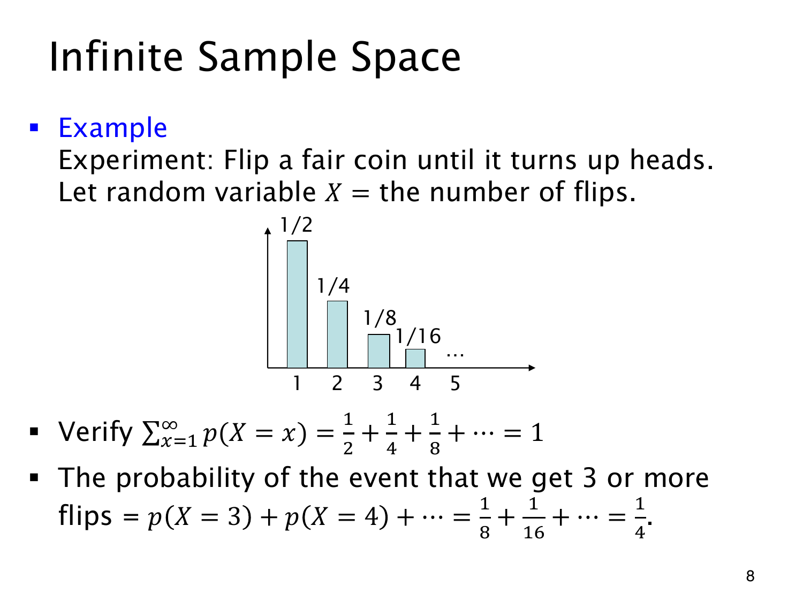
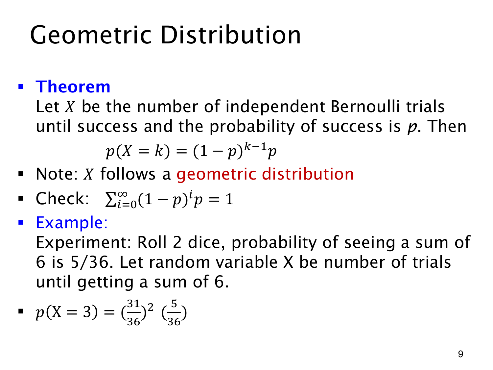
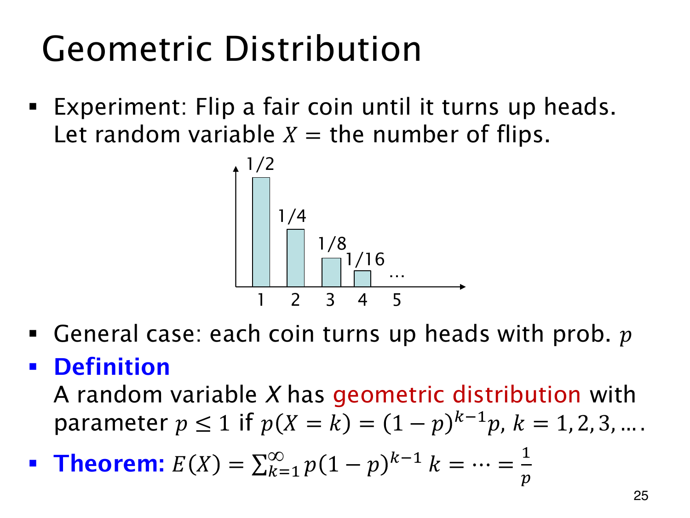
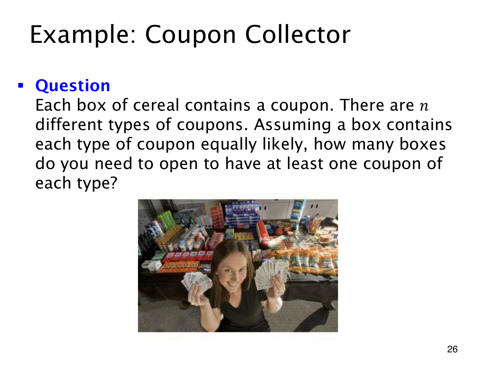
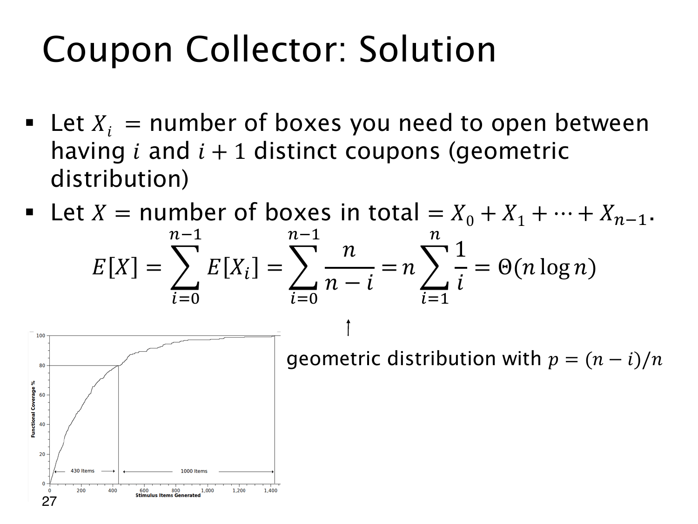

几何分布与等待时间
连接首次成功的分布、期望等待次数及 Coupon Collector。
0 道练习
查看这一页课件

等到第一次正面
独立抛公平硬币，出现第一次正面时停止。X 记总抛掷次数，包含最后那次正面，所以取值为 1,2,3,…。它没有有限上限，仍是离散随机变量。
X=k 要求前 k−1 次全反面、第 k 次正面：
p(X=k)=(21)k−121=2k1.
图中柱高依次为 1/2,1/4,1/8,1/16,…。概率逐项减小，几何级数仍可加成 1：
k=1∑∞p(X=k)=1−1/21/2=1.
至少抛三次，只要求前两次都是反面，故 p(X≥3)=1/4。按课件求尾和，也得到 1/8+1/16+⋯=1/4；恰好三次则只有 1/8。
永远没有正面的概率为 limm→∞(1/2)m=0，因此以概率 1 在有限次内停止。无限多个正概率可以相加为 1，靠的是这里的递减数列，并非给每个结果相同的正概率。
查看这一页课件

几何分布从哪一次开始数
独立重复 Bernoulli 试验，每次成功概率为同一个 0<p≤1。X 记首次成功所需的总次数，包含成功那一次，称为 geometric distribution（几何分布）：
p(X=k)=(1−p)k−1p,k=1,2,….
前 k−1 次失败，最后一次成功，成功位置已经固定，所以没有组合系数。令 q=1−p，总概率可核对为
k=1∑∞qk−1p=1−qp=1.
p=0 时永远不成功，便不能使用这张有限等待次数的 pmf。
每次同时掷两颗公平独立骰子，和为 6 的有序对是 (1,5),(2,4),(3,3),(4,2),(5,1)，成功概率为 5/36。若各轮试验也独立，首次在第三轮成功的概率为
p(X=3)=(3631)2365.
二项分布固定做几次，数成功次数；几何分布则等到成功，数等待次数。另有一种几何分布约定只数成功前的失败次数，从 0 开始，比本页的 X 少 1，使用公式前须看清采用哪种定义。
查看这一页课件

几何等待次数为什么平均为 1/p
X 记录独立试验直到首次成功的总次数，包含成功那一次：
p(X=k)=(1−p)k−1p,k≥1.
参数应满足 0<p≤1。原页只写 p≤1，还要排除 p=0：此时不会有限成功，1/p 也无定义。
记 q=1−p，从期望定义得到
E(X)=pk=1∑∞kqk−1.
几何级数 ∑k=0∞qk=1/(1−q) 在 ∣q∣<1 内可以求导，故
k=1∑∞kqk−1=(1−q)21,E(X)=(1−q)2p=p1.
公平硬币平均等 2 次；单次成功概率 1/10，平均等 10 次。这并不保证第十次成功，也没有给出等待次数的上限。
若改数成功前的失败次数 Y=X−1，期望就是 E(Y)=1/p−1=(1−p)/p。两种约定的起点分别为 1 和 0，公式也相差 1。
查看这一页课件

收齐优惠券为什么要分阶段
每盒谷物有一张优惠券，共 n 种，各类等可能，并按不同盒子相互独立的模型计算。Coupon Collector 问的是收齐种类所需开盒数的期望。
至少得开 n 盒，但这些盒子可能重复。n>1 时，任何有限盒数都仍可能没有收齐，因此期望不是保证完成的期限。
按已经收集的不同种类数分阶段。已有 k 种时，下一盒是新种类的概率为
pk=nn−k.
抽到旧券，状态仍停在 k。盒间独立使这一阶段的成功概率保持不变，等待下一个新种类的次数便服从几何分布，期望为 1/pk。
从 0 种到 n 种，全部开盒数等于各阶段等待数之和，可以用线性性求期望，无须列出收齐时间的整个分布。越往后新种类越少；只缺最后一种时，每盒成功率为 1/n，“最后几种特别难等”就体现在这个越来越小的成功率上。
查看这一页课件

收齐的平均盒数是 nHₙ
令 Xi 为从已有 i 种券到第一次拥有 i+1 种时新增的开盒数，包含得到新券的那一盒。总盒数为
X=X0+X1+⋯+Xn−1.
独立均匀抽取时，还缺 n−i 种，成功率为 (n−i)/n，所以几何等待的期望为 E(Xi)=n/(n−i)。相加并换下标：
E(X)=i=0∑n−1n−in=nj=1∑nj1=nHn=Θ(nlogn).
第一种券一盒就有，最后一种平均要等 n 盒。例如 n=3 时，平均为 1+3/2+3=5.5 盒，高于最少的 3 盒。
图上的覆盖曲线先快后慢，直观表现了重复越来越多。图没有给定具体生成模型，不能把横轴数字当成这个公式的额外精确结论。
若券的种类不等概率，成功率会取决于“还缺哪几种”，只知道已收集 i 种便不够，通常不能套用同一个阶段公式。
课后练习
现有已验证题库中暂未找到只依赖本课知识的对应原题，保留 0 道练习。